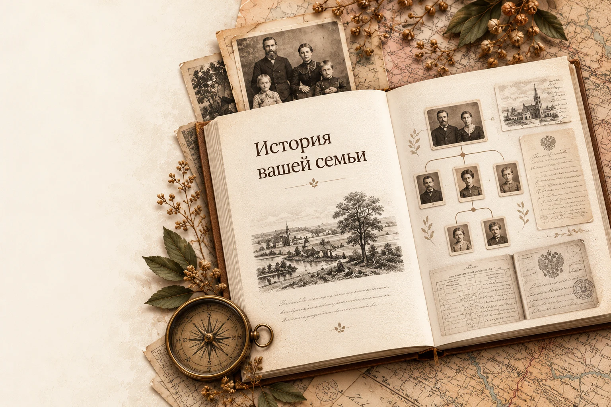

Архивы бывшего СССР
Поиск по всем доступным открытым источникам на территории бывшего СССР. Учитываем исторические границы и изменения названий мест.
→ЛЮДИ · АРХИВЫ · ИСТОРИИ
Поможем найти сведения о ваших родственниках в открытых архивах бывшего СССР — метрических книгах, переписях, списках переселенцев и воинских документах.
Начать поиск →ОСОБОЕ ПРЕДЛОЖЕНИЕ
Первые сведения о ближайших поколениях семьи: кто они, где жили и откуда могли приехать.
Без оплаты на сайте. Состав и сроки согласуются до заказа.
Карта и фотографии — художественная иллюстрация семейной истории.
Поиск по всем доступным открытым источникам на территории бывшего СССР. Учитываем исторические границы и изменения названий мест.
→Сопоставляем документы, даты и семейные связи. Различаем однофамильцев, подтверждённые сведения и рабочие гипотезы.
→Собираем найденные факты, ссылки и архивные шифры с пояснениями. Источники останутся с вами для продолжения поиска.
→ГДЕ ХРАНИТСЯ ПАМЯТЬ
От метрических книг до военных документов и переселенческих списков. Выбираем источники по месту, времени и истории вашей семьи.
114 ресурсов · 11 направленийЭто каталог возможных направлений поиска. Доступность, охват и условия работы различаются: могут потребоваться регистрация, подтверждение родства или отдельная плата архиву. Проверка каждого ресурса не входит автоматически в обзорный поиск.
Запись в индексе, семейное дерево или рассказ на форуме — отправная точка, а не доказательство родства. Существенные выводы проверяем по происхождению записи и доступным документам.
КАК ЭТО РАБОТАЕТ
Бережно ищем, проверяем и собираем факты, чтобы за отдельными записями проступила история ваших предков.
Результат исследования — индивидуальная веб-страница вашей семьи с интерактивным семейным древом, картой мест проживания и переездов, временной шкалой и семейной летописью. Найденные сведения и источники собираются в единую историю, которую удобно изучать и передавать близким.
Вы рассказываете,
что уже знаете
Поиск по открытым
архивным данным
Сопоставление фактов
и проверка связей
Обзор находок
и следующих шагов

РЕЗУЛЬТАТ, КОТОРЫЙ ОСТАНЕТСЯ
Понятный обзор того, что удалось узнать о вашей семье, какие источники это подтверждают и куда двигаться дальше.
Сохранность и доступность архивов различаются. Конкретные находки и установление родства заранее не гарантируются.
Имена, даты, найденные упоминания и степень подтверждения связей.
Места рождения и жизни, возможные переезды и исторические названия.
Ссылки, архивные шифры, ограничения поиска и перспективные направления.
ЕЩЁ НЕСКОЛЬКО ДЕТАЛЕЙ
Можно начать с неё, но имя, примерные годы и место жизни помогут сузить круг. В анкете укажите всё, что помните, а неизвестные сведения оставьте пустыми.
Доступные открытые каталоги, оцифрованные документы и базы по территории бывшего СССР, СССР и Российской империи: метрические, военные, переписные, миграционные и другие исторические записи. Закрытые фонды и платные архивные услуги не включены.
В обзоре будут указаны проверенные направления, ограничения и возможные следующие шаги. Сохранность архивов различается; гарантировать находки заранее невозможно.
Сервис посвящён семейной истории и историческим документам. Поиск текущих адресов, телефонов и закрытых персональных данных не проводится.
ВАША ИСТОРИЯ БЛИЖЕ, ЧЕМ КАЖЕТСЯ